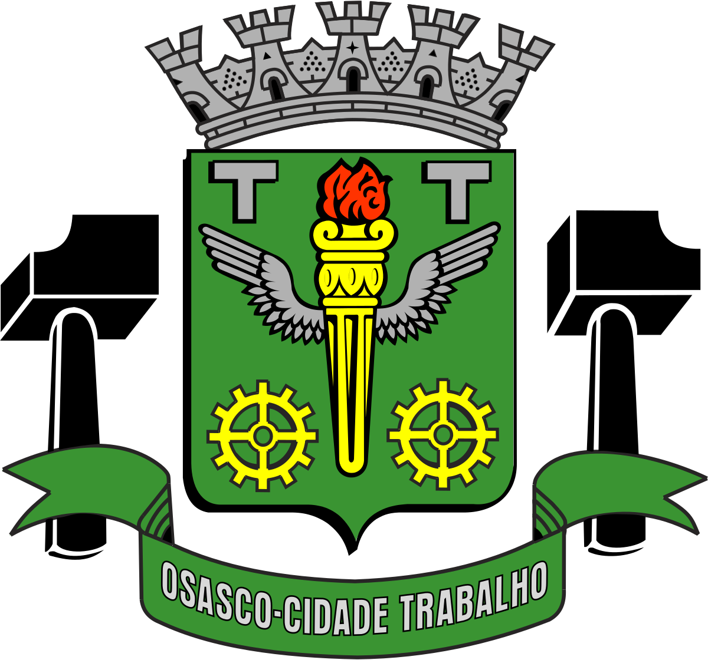
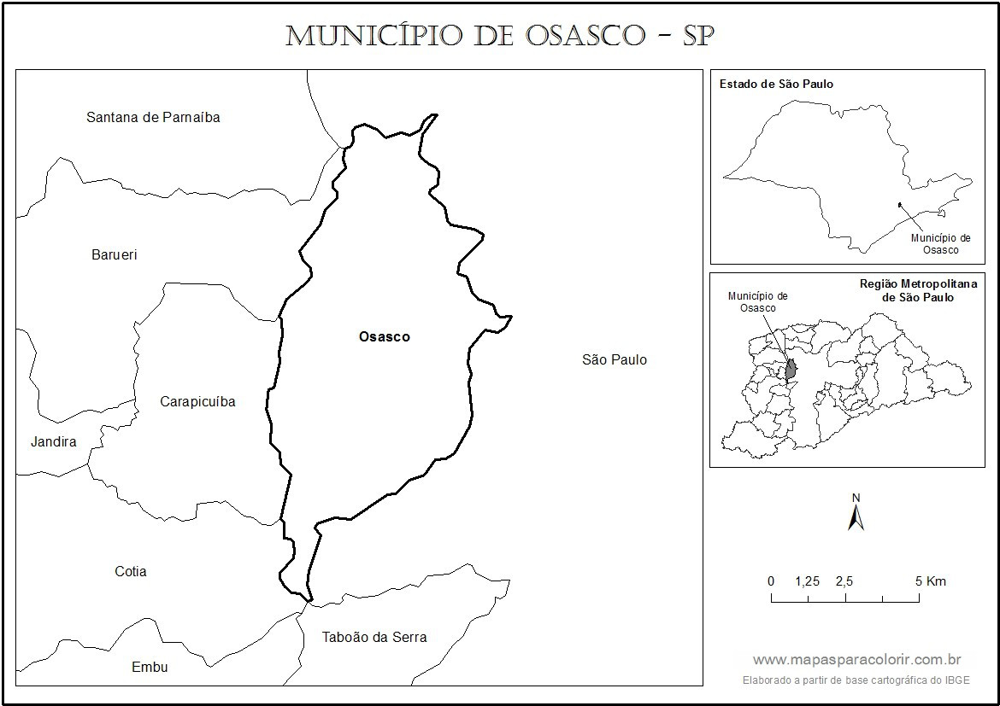
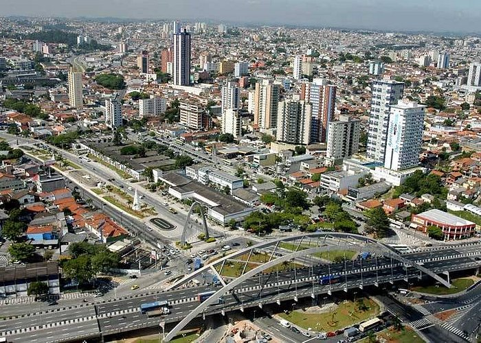
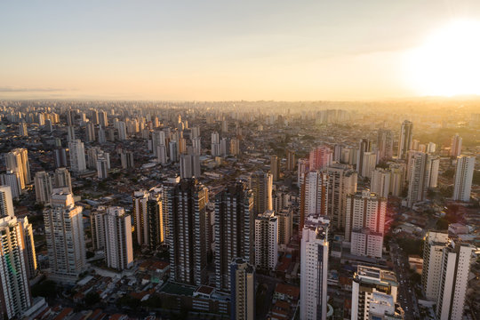

Osasco
Osasco é um município brasileiro localizado na Região Metropolitana de São Paulo, no estado de São Paulo, no Brasil. Nascido como um bairro da capital paulista no final do século XIX, tornou-se município emancipado após um plebiscito em 1962.
História da cidade de OsascoA cidade já surgiu com vocação para crescer. Ela era parte da rota dos bandeirantes que desbravavam o estado. Registros históricos indicam a existência de povoamento nessa área desde o século XVII, quando, em 1634, as terras do bairro de Quintana pertenciam ao bandeirante Antônio Raposo Tavares
Mapa da cidade de Demografia e Geografia da cidade de Osasco
Segundo estimativa populacional do Instituto Brasileiro de Geografia e Estatística (IBGE) para 2018, Osasco possui aproximadamente 696 850 habitantes, sendo o 7° mais populoso do Estado de São Paulo, e o 28° mais populoso do Brasil, com uma densidade demográfica de 10 700,62 habitantes por quilômetro quadrado. O bairro mais populoso de Osasco é o Jardim Veloso (32 168 habitantes). O município é a 48° maior área urbana do país, com 61 000 quilômetros quadrados.
Osasco é um município da sub-região oeste situado na Região Metropolitana de São Paulo (RMSP) com uma população de 696 382 habitantes (estimativa populacional 2016 do Instituto Brasileiro de Geografia e Estatística), sendo a sexta mais populosa do Estado de São Paulo e a vigésima sexta do Brasil. Localiza-se a uma latitude 23°3158" sul e a uma longitude 46°47'31" oeste. Seus limites são a capital paulista a norte, leste e sul, Cotia a sudoeste, Carapicuíba e Barueri a oeste. Osasco possui atualmente 60 bairros oficiais. Localiza-se perto da capital paulista a oeste, distando desta cerca de 16 quilômetros.
Economia da cidade de Osasco
o PIB per capita de Osasco é de R$ 109 mil, valor superior à média do estado (R$ 51,4 mil), da grande região de São Paulo (R$ 54,9 mil) e da pequena região de São Paulo (R$ 56,6 mil).
